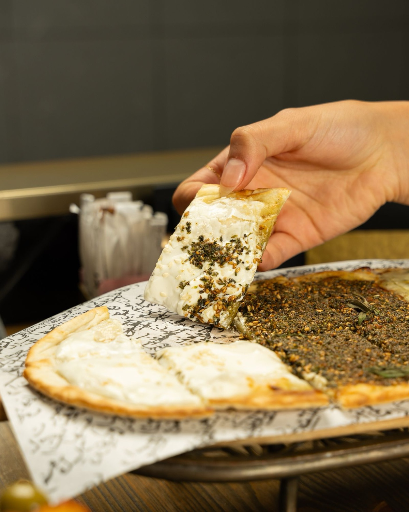

Zaatar Manakish
Thin, oven-baked dough topped with a generous spread of za'atar, olive oil and sesame — light, aromatic and full of flavour.

Who We Are
At Royal Bake, we bring the rich flavours and timeless traditions of Middle Eastern baking straight to your table.
With over 30 years of experience in the art of bakery and food making, our passion lies in crafting authentic, hand-prepared delights like manakish, fatayer and freshly baked breads and pastries — each made with love, heritage and the finest ingredients. Every bite tells a story rooted in culture and family tradition.
Signature Bakes
Thin, oven-baked dough topped with a generous spread of za'atar, olive oil and sesame — light, aromatic and full of flavour.
Warm, melty and comforting, made with a blend of Middle Eastern cheeses over soft dough for the perfect salty-creamy balance.
A savoury dough base topped with finely spiced minced meat, onions and herbs. A hearty favourite for lunch or dinner.
Golden, triangle-shaped pastries filled with a tangy spinach mix, onions and lemon — baked until soft and flaky.
Thin, soft and slightly chewy, our saj dough is cooked fresh daily — perfect for wraps, dips or on its own.
Meet the Chefs
Head Chef & Founder · 30+ years
A seasoned master in the art of baking and gourmet food preparation. Known for his passion, precision and creativity, Abu-Abdo has led kitchens across more than three restaurants, trained aspiring chefs and blended traditional techniques with an innovative flair. A true craftsman devoted to the culinary arts.
Baker · 15+ years
The proud son of our head chef, Abdul grew up surrounded by the aromas of za'atar and fresh dough. He has mastered the craft over 15 years, blending authentic recipes with a modern touch while staying true to the traditions that define our bakery — bringing warmth and heart to every item for his fellow Calgarians.
Taste the Difference
Explore our full menu of manakish, mini pies, BBQ and more — freshly baked every day.